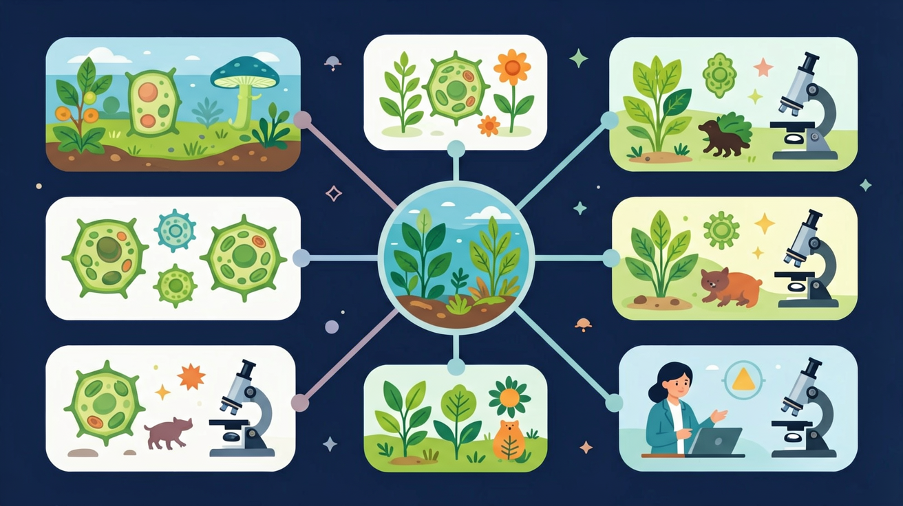

Gallery v1.0.0 · skill v7.14
生命系统怎样在种群、群落和生态系统层面保持动态平衡？

先选一个卡点。后面的例子、互动和 AI 学伴都会围绕它给你最小提示。
选择或输入后，本课会围绕你的问题展开。
如果学生只说出概念名称，继续追问：题干里哪个证据最关键？这个证据对应分子、细胞、个体还是生态系统层级？如果改变 物种组成、优势种、光照/水分、竞争和捕食关系 中的一个条件，结果会怎样？这三问能把答案从背诵推进到科学解释。
❓ 为什么同一片森林里有的动物多有的少？
❓ 群落演替到底是怎么一步步变化的？
❓ 人类活动对群落的影响真的不可逆吗？
学完这一课，这些问题你都能自信地回答。
已经知道：此前已学习种群概念（如某池塘全部鲤鱼）和生态因素（如阳光对植物的影响），并掌握食物链中物种的捕食关系
但问题是：容易混淆种群与群落边界（如把一片森林中所有树木当成群落），且难以理解种间竞争（如乔木遮光如何导致草本减少）与共生（地衣）的本质区别
所以学：当护林员分析山林火灾后植被恢复方案时，需要准确判断哪些物种构成功能群落，预测优势树种与伴生植物的竞争关系来规划补种策略
下列哪种现象属于寄生关系？
设计实验验证光照强度如何影响池塘生物的分层分布
现象入口：一片森林中不同植物、动物和微生物共同生活，并在垂直和水平空间上形成结构。
机制解释：群落是一定区域内所有种群的集合，物种组成、优势种、种间关系和空间结构共同决定群落特征。
证据抓手：证据来自样方调查、物种丰富度、垂直分层和演替序列。
变量线索：物种组成、优势种、光照/水分、竞争和捕食关系。做题时先找变量，再判断机制，最后写证据。
情境：森林的垂直分层提高了对光照等资源的利用。
作答路径：森林中乔木层占据顶层吸收强光，灌木层利用漫射光（现象）→垂直分层使不同高度植物匹配光照需求（机制）→如阴生植物在底层仍能存活（证据）
评分提醒：易混淆竞争与捕食的曲线特征，或忽视次生演替中人类活动（如植树）对方向的影响
观察地衣横切面，藻类与真菌紧密交织形成互利共生结构
分析捕食曲线中猎物种群峰值总是先于捕食者出现的跟随关系
比较初生演替（裸岩）与次生演替（火灾后）土壤和繁殖体的差异
用竞争排斥原理解释农田杂草与作物此消彼长的现象
分析池塘、草地和森林时，先区分种群、群落和生态系统。
提交后会检查你的解释是否包含现象、机制和变量。
真实生态规律：猎物增多→捕食者随之增多→猎物被吃减少→捕食者挨饿减少→猎物恢复，形成此起彼伏的周期振荡。
💡 探究任务：调初始猎物与捕食者数量，观察两条曲线“先增先减、后增后减”的跟随关系，这是判断捕食关系的钥匙。
关于群落演替的错误说法是？
先独立作答，再点选项查看对错与错因。
下列哪项最能体现池塘群落的垂直结构？
池塘中的绿藻和水蚤属于：
若清除池塘所有睡莲，首先受影响的是：
池塘中所有____的总和称为群落
答案：生物种群
群落定义强调同一时空内所有种群的集合
芦苇集中在岸边、睡莲分布在浅水区，这种现象称为群落的____结构
答案：水平
描述不同种群在水平空间上的分布格局
热带雨林中藤本植物与乔木争夺光照的种间关系是？
学习小结：群落通过垂直分层（如乔木层-灌木层）和种间关系（竞争/共生等）优化资源利用，演替类型由土壤和繁殖体存在与否决定。
把群落等同于生态系统，忽略非生物环境不属于群落组成。
只说“增加/减少”不够，要写清改变的是 物种组成、优势种、光照/水分、竞争和捕食关系 中的哪一个。
没有实验现象、曲线趋势或结构证据，答案就像猜测。
✅ 优势种要看对环境影响程度
💡 混淆数量优势与功能优势
✅ 顶级群落由气候决定，可能是草原/荒漠
💡 忽视非生物因素限制
口诀：物种关系网，结构分上下，演替看起点，人类影响大
类比：群落像交响乐团，不同乐器（物种）各司其职又相互配合
视频用语音和动态画面回顾本课主线：问题情境 → 机制模型 → 证据判断 → 迁移应用。
用 PhET 观察环境压力如何改变种群中不同表型个体的比例，再讨论它和 群落 的关系。
💡 操作提示：改变环境、捕食者或突变条件，记录种群数量曲线，判断哪些变化是个体层面，哪些是种群层面。
列举两种体现互利共生的生物组合
分析苔原带火灾后首先出现的先锋植物属于哪种演替类型
设计实验验证光照强度对森林群落垂直分层的影响